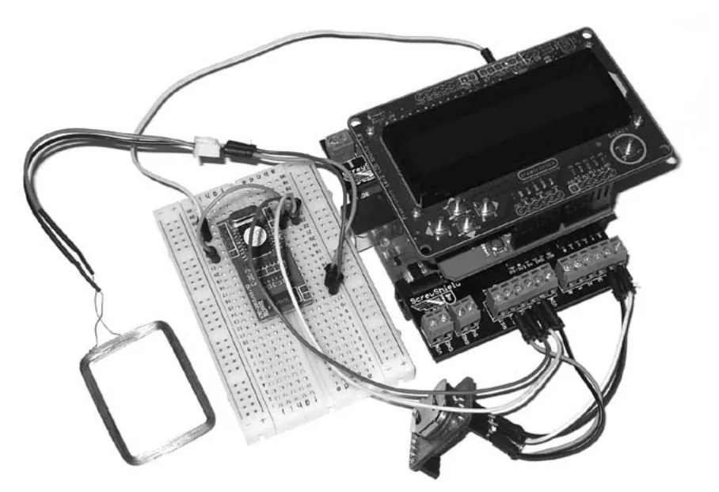
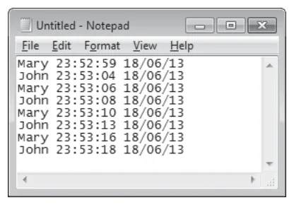

In this project we’ll create a time-clock system. You’ll see how Arduino shields can work together and how the ProtoScrewShield helps you introduce electronic parts that aren’t mounted on a shield. This system can be used by two people who are assigned an RFID card or tag that they’ll swipe over an RFID reader when they enter or leave an area (such as the workplace or a home). The time and card details will be recorded to a microSD card for later analysis.
We covered logging data to a microSD card in Chapter 13, to the RFID in Chapter 16, and to the RTC earlier in this chapter. Now we’ll put the pieces together.
The Hardware
Here’s what you’ll need to create this project:
- Arduino and USB cable
- Various connecting wires
- Real-time clock module (shown earlier in the chapter)
- LCD module or Freetronics LCD shield
- MicroSD card shield and card (from Chapter 13)
- ProtoScrewShield or similar product
- RFID reader module and two tags (from Chapter 16)
To assemble the system, start with the Arduino Uno at the bottom, and then add your ProtoScrewShield, the microSD card shield, and the LCD shield on the top. Connect the RFID reader as you did in Chapter 16, and connect the RTC module as described earlier in this chapter. The assembly should look similar to that shown in Figure 18-5.

The Sketch
Now enter and upload the following sketch. Remember that when you’re uploading sketches to an RFID-connected Arduino, you need to ensure that you remove the wire between the RFID reader RX and Arduino pin D0, and then reconnect it once the sketch has been uploaded successfully.
// Project 59 - Creating an RFID Time-Clock System
❶ #include "Wire.h" // for RTC
#define DS3232_I2C_ADDRESS 0x68
❷ #include "SD.h" // for SD card
#include <LiquidCrystal.h>
LiquidCrystal lcd( 8, 9, 4, 5, 6, 7 );
int data1 = 0;
❸ // Use Listing 16-1 to find your tag numbers
int Mary[14] = {
2, 52, 48, 48, 48, 56, 54, 67, 54, 54, 66, 54, 66, 3};
int John[14] = {
2, 52, 48, 48, 48, 56, 54, 66, 49, 52, 70, 51, 56, 3};
int newtag[14] = {
0,0,0,0,0,0,0,0,0,0,0,0,0,0}; // used for read comparisons
// Convert normal decimal numbers to binary coded decimal
byte decToBcd(byte val)
{
return( (val/10*16) + (val%10) );
}
// Convert binary coded decimal to normal decimal numbers
byte bcdToDec(byte val)
{
return( (val/16*10) + (val%16) );
}
void setDS3232time(byte second, byte minute, byte hour, byte dayOfWeek, byte
dayOfMonth, byte month, byte year)
{
// Sets time and date data to DS3232
Wire.beginTransmission(DS3232_I2C_ADDRESS);
Wire.write(0); // set next input to start at the seconds register
Wire.write(decToBcd(second)); // set seconds
Wire.write(decToBcd(minute)); // set minutes
Wire.write(decToBcd(hour)); // set hours
Wire.write(decToBcd(dayOfWeek)); // set day of week (1=Sunday, 7=Saturday)
Wire.write(decToBcd(dayOfMonth)); // set date (1 to 31)
Wire.write(decToBcd(month)); // set month
Wire.write(decToBcd(year)); // set year (0 to 99)
Wire.endTransmission();
}
void readDS3232time(byte *second,
byte *minute,
byte *hour,
byte *dayOfWeek,
byte *dayOfMonth,
byte *month,
byte *year)
{
Wire.beginTransmission(DS3232_I2C_ADDRESS);
Wire.write(0); // set DS3232 register pointer to 00h
Wire.endTransmission();
Wire.requestFrom(DS3232_I2C_ADDRESS, 7);
// Request seven bytes of data from DS3232 starting from register 00h
*second = bcdToDec(Wire.read() & 0x7f);
*minute = bcdToDec(Wire.read());
*hour = bcdToDec(Wire.read() & 0x3f);
*dayOfWeek = bcdToDec(Wire.read());
*dayOfMonth = bcdToDec(Wire.read());
*month = bcdToDec(Wire.read());
*year = bcdToDec(Wire.read());
}
void setup()
{
Serial.flush(); // need to flush serial buffer
Serial.begin(9600);
Wire.begin();
lcd.begin(16, 2);
// set the initial time here:
// DS3232 seconds, minutes, hours, day, date, month, year
//setDS3232time(0, 27, 0, 5, 15, 11, 12);
// Check that the microSD card exists and can be used
❹ if (!SD.begin(8))
{
lcd.print("uSD card failure");
// stop the sketch
return;
}
lcd.print("uSD card OK");
delay(1000);
lcd.clear();
}
// Compares two arrays and returns true if identical.
// This is good for comparing tags.
boolean comparetag(int aa[14], int bb[14])
{
boolean ff=false;
int fg=0;
for (int cc=0; cc<14; cc++)
{
if (aa[cc]==bb[cc])
{
fg++;
}
}
if (fg==14)
{
ff=true; // all 14 elements in the array match each other
}
return ff;
}
void wipeNewTag()
{
for (int i=0; i<=14; i++)
{
newtag[i]=0;
}
}
void loop()
{
byte second, minute, hour, dayOfWeek, dayOfMonth, month, year;
if (Serial.available() > 0) // if a read has been attempted
{
// Read the incoming number on serial RX
delay(100); // Allow time for the data to come in from the serial buffer
for (int z=0; z<14; z++) // read the rest of the tag
{
data1=Serial.read();
newtag[z]=data1;
}
Serial.flush(); // stops multiple reads
// retrieve data from DS3232
readDS3232time(&second, &minute, &hour, &dayOfWeek, &dayOfMonth, &month,
&year);
}
//now do something based on the tag type
❺ if (comparetag(newtag, Mary) == true)
{
lcd.print("Hello Mary ");
File dataFile = SD.open("DATA.TXT", FILE_WRITE);
if (dataFile)
{
dataFile.print("Mary ");
dataFile.print(hour);
dataFile.print(":");
if (minute<10) { dataFile.print("0"); }
dataFile.print(minute);
dataFile.print(":");
if (second<10) { dataFile.print("0"); }
dataFile.print(second);
dataFile.print(" ");
dataFile.print(dayOfMonth);
dataFile.print("/");
dataFile.print(month);
dataFile.print("/");
dataFile.print(year);
dataFile.println();
dataFile.close();
}
delay(1000);
lcd.clear();
wipeNewTag();
}
if (comparetag(newtag, John)==true)
{
lcd.print("Hello John ");
File dataFile = SD.open("DATA.TXT", FILE_WRITE);
if (dataFile)
{
dataFile.print("John ");
dataFile.print(hour);
dataFile.print(":");
if (minute<10) { dataFile.print("0"); }
dataFile.print(minute);
dataFile.print(":");
if (second<10) { dataFile.print("0"); }
dataFile.print(second);
dataFile.print(" ");
dataFile.print(dayOfMonth);
dataFile.print("/");
dataFile.print(month);
dataFile.print("/");
dataFile.print(year);
dataFile.println();
dataFile.close();
}
delay(1000);
lcd.clear();
wipeNewTag();
}
}How It Works
In this sketch, the system first waits for an RFID card to be presented to the reader. If the RFID card is recognized, then the card owner’s name, the time, and the date are appended to a text file stored on the microSD card.
At ❶ are the functions required for the I2C bus and the real-time clock, and at ❷ is the line required to set up the microSD card shield. At ❹, we check and report on the status of the microSD card. At ❺, the card just read is compared against the stored card number for one of two people—in this case, John and Mary. If there is a match, the data is written to the microSD card. With some modification, you could add more cards to the system simply by adding the card serial numbers below the existing numbers at ❸ and then adding other comparison functions like those at ❺.
When the time comes to review the logged data, simply copy the file data.txt from the microSD card and view the data with a text editor; or import it into a spreadsheet for further analysis. The data is laid out so that it’s easy to read, as shown in Figure 18-6.
